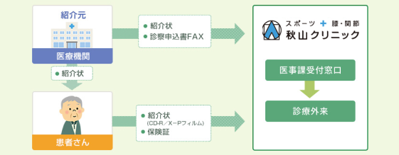

医療関係者の方へ
HOME > 医療関係者の方へ
医療関係者の方へ
患者様のご紹介について
紹介していただいた患者さまは、医事課受付窓口にて受付していただき診療外来へ案内します。
担当医師や診察日につきましては、外来担当医表をご確認ください。
※緊急性の高い患者さまは直接お電話ください。
～ご紹介の流れ～

紹介状を持参いただいた紹介患者さまの診察結果につきましては、
受診後、当院担当医師から紹介元の先生方に「報告書」を送付いたします。
〒811-0119
福岡県糟屋郡新宮町緑ヶ浜４丁目１７－１
診療科／整形外科、リウマチ科、スポーツ整形外科
膝関節外科、肩関節外科
診療時間／午前 ９：００～１２：３０
午後 １４：３０～１８：３０
☎ 092-963-5522